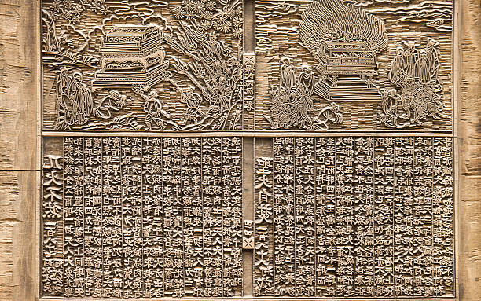
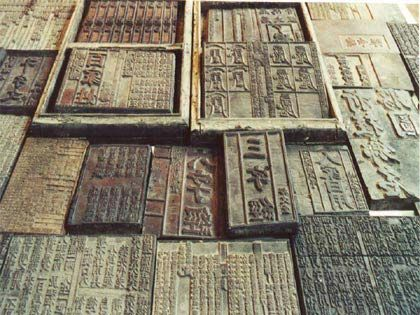

In the woodblock technique, ink is applied to letters carved upon a wooden board, which is then pressed onto paper. With moveable type, the board is assembled using different lettertypes, according to the page being printed. Wooden printing was used in the East from the 8th century onwards, and moveable metal type came into use during the 12th century.

The earliest specimen of woodblock printing on paper, whereby individual sheets of paper were pressed into wooden blocks with the text and illustrations carved into them, was discovered in 1974 in an excavation of Xi'an (then called Chang'an, the capital of Tang China), Shaanxi, China. It is a dharani sutra printed on hemp paper and dated to 650 to 670 AD, during the Tang dynasty (618–907). Another printed document dating to the early half of the Chinese Tang dynasty has also been found, the Saddharmapunṇḍarīka sutra or Lotus Sutra printed from 690 to 699.

The manuscript is transcribed onto thin slightly waxed sheets of paper by a professional calligrapher. The wax prevents the ink from being as readily absorbed into the paper, allowing more ink to be absorb onto another surface. The paper is placed ink side down onto a wooden block on which a thin layer of rice paste has been thinly spread. The back of the paper is rubbed with a flat palm-fibre brush so that the wet rice paste absorbs some of the ink and an impression of the inked area is left on the block. The engraver uses a set of sharp-edged tools to cut away the uninked areas of the wood block in essence raising an inverse image of the original calligraphy above the background.